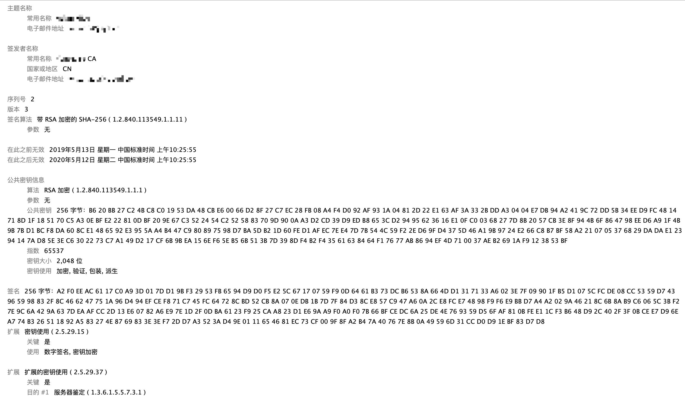
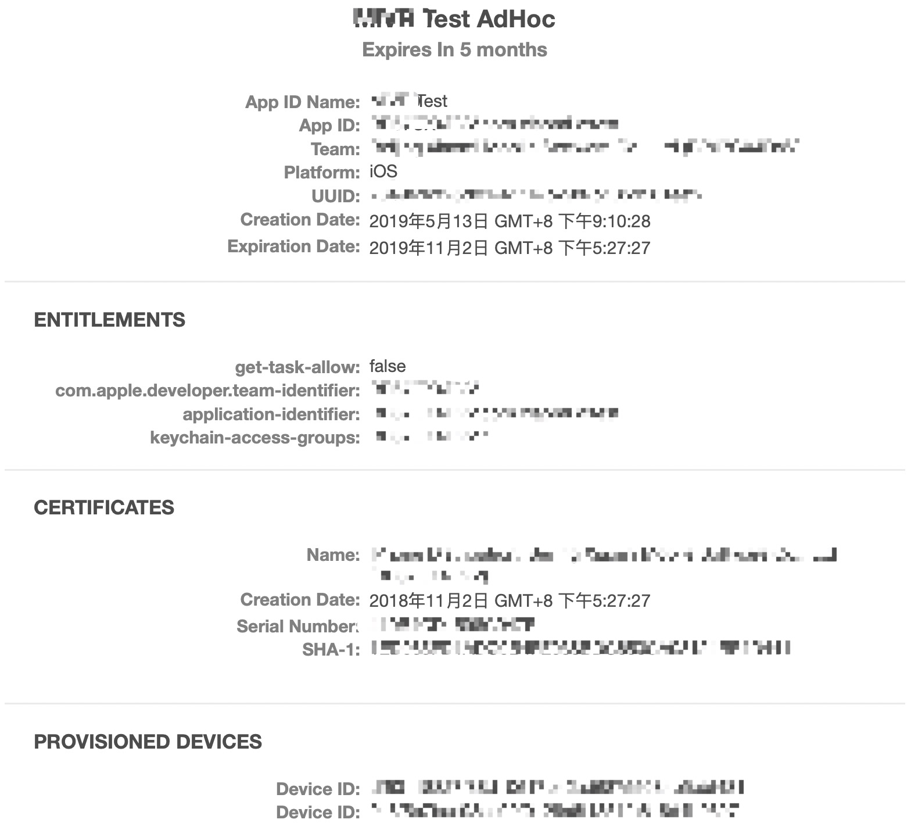

本文对苹果的开发者后台的certificate、provisioning profile等背后的原理进行简单阐述。
#iOS app开发及上架流程
在开发iOS app之前，首先要在苹果后台配置一大堆东西后才能正常地使用真机进行调试以及将app发布到app store。其主要流程如下：
- 在mac的钥匙串中搞到csr文件。
- 在开发者后台创建一个开发者证书(cer文件)，其间需要上传1.中得到的csr文件。
- 在mac中安装2.生成的开发者证书。
- 在开发者后台创建app id。
- 在开发者后台添加设备。
- 生成provisioning profile。
- 在xcode中安装5.中生成的provisioning profile。
- 开发，真机调试。
- 上传app store，发布。
签名算法简介
签名的运作包括以下几个部分
- 对待签名的数据进行hash，取得数据摘要。
- 使用签名专用的非对称加密算法对数据摘要进行加密。（使用私钥加密）
- 将加密结果（签名）附在数据上一并传递出去。
- 接收方使用公钥解密签名，得到数据摘要。
- 接收方对数据进行hash，得到数据摘要。
- 对比上面两步的摘要是否完成相同。如果不同，说明数据被篡改过。
所以，签名过程主要包含两步
- 对数据取hash
- 使用私钥对hash进行非对称加密
签名算法的核心在于：只要保证发送方的私钥安全，就无人能伪造。
使用hash求取数据摘要的原因是，原数据可能很大，签名时用的非对称加密算法无法输入如此庞大的数据，或者加密速度太慢。
hash算法，也叫散列算法，是一种单向算法，只能从数据得到摘要，无法从摘要导出数据，且不同的数据得出的hash是不同的（有可能相同，这种情况叫hash碰撞，极少出现，一般认为不会出现）。hashs算法速度快，且能极大地缩减数据量。这样就弥补了签名用的非对称加密算法的不足。
值得注意的是，签名使用的非对称加密算法并不是使用任何非对称加密算法都可以。虽然两者看起来很像，但保证数据私密性的非对称加密算法是使用公私加密，通过私钥解密，它对解密用的钥匙安全等级要求高，而不关心加密用钥匙的安全等级。而签名中用到的非对称加密算法是使用私钥加密，使用公钥解密，它对加密用的钥匙安全等级要求高，而不关心解密用钥匙的安全等级。所以并不是说，使用任意一种非对称加密算法，单纯将私钥公布出去，将公钥保密就可以的。反过来，也不是任何一种签名用的非对称加密算法都能用于保证数据私密性。
app store应用安装
苹果公司有这么一对签名密钥，私钥内部保存，公钥内置到所有iOS设备中。iOS设备在安装任何app时，都要验证这个app是不是苹果官方允许的。苹果在向app store上架app的时候，会使用私钥对app进行签名。iOS设备在从app store安装app时，然内置的公钥对app的签名信息进行验证。这样就保证了app都是苹果审核通过允许安装的app。
调试程序安装
开发者调试程序时需要向手机上安装自己的程序，开发者显然不能把自己需要调试的程序打包找苹果去签名。于是，苹果就用证书链的方式，为开发者发放开发证书。开发者自己生成一对公私钥，苹果对开发者的信息和公钥进行签名，生成证书。开发者使用自己的私钥为app签名，然后带上自己的证书。iOS设备先使用苹果的公钥解密证书中的签名，验证开发者身份，再用证书中的公钥解密app的签名，验证app。这样就能保证该app是苹果信任的开发者进行安装的。
在本文开关的流程中，第一部和第二步就是生成开发者证书的步骤。这两步主要做的事如下：
- 在mac的钥匙串中搞到csr文件。
实际上是钥匙串工具为开发者生成了一对公私钥，私钥保存在mac中，公钥导出到csr文件。 - 生成开发者证书。
苹果为开发者生成一个证书，将开发者的信息和开发者的公钥打包在一起，并计算这些信息签名，最终将开发者信息、开发者公钥、签名全部打包成cer文件。这个过程中上传的csr文件就是开发者公钥。
附上一个证书样本

可以看到，证书主要有以下信息：
- 证书持有者信息
- 证书签发者信息
- 证书使用的签名算法
- 有效期
- 证书持有者公钥
- 数字签名
- 扩展和指纹(暂时没搞懂是干嘛用的)
另外插一句。Push notification也需要像添加开发者一样添加证书，其原理和添加开发者其实是一样的。只不过发送push notification的人的身份不是开发者，而是一另外一个身份，所以需要使用单独的私钥来签名。
Provisioning profile是划定开发者权限范围用的。在真机调试之前，需要在开发者后台生成provisioning profile文件，后缀是mobileprovision。在生成这个文件时一般会经过选择app id、开发者、设备。苹果这些信息打包到provisioning profile中，并使用私钥签名。开发者下载该文件后，安装到xcode中，最终被打包到ipa包中(app的根目录下的embedded.mobileprovision文件)。真机在安装app时会检查app包内的embedded.mobileprovision文件信息，检查app包签名的证书以及当前设备是否在embedded.mobileprovision中有描述。只有验证通过后才能在真机上运行。它的大概样子如下图

它包含了四部分
- 应用基本信息
- 权限信息
- 开发者证书
- 设备
权限信息对应的是xcproject文件中capabilities中的内容，这些内容是需要在开发者后台开通的。
开发者证书中列出了可以签名本应用的开发者。
设备中列出了可以安装本应用的设备。发布以及In house的provisioning profile没有设备这一项，只有AdHoc和Development的才有。
记录
附上查看app包查看签名信息的脚本
- 查看app的签名(将ipa包改为zip解压后)
codesign -vv -d Example.app - 对app进行签名
codesign -s 'iPhone Developer: Thomas Kollbach (7TPNXN7G6K)' Example.app - 验证app签名
codesign --verify Example.app - 查看app中的描述文件内容
codesign -d --entitlements - Example.app - 查看系统中可以对代码进行签名的证书
security find-identity -v -p codesigning - 查看mobileprovision文件内容
security cms -D -i embedded.mobileprovision